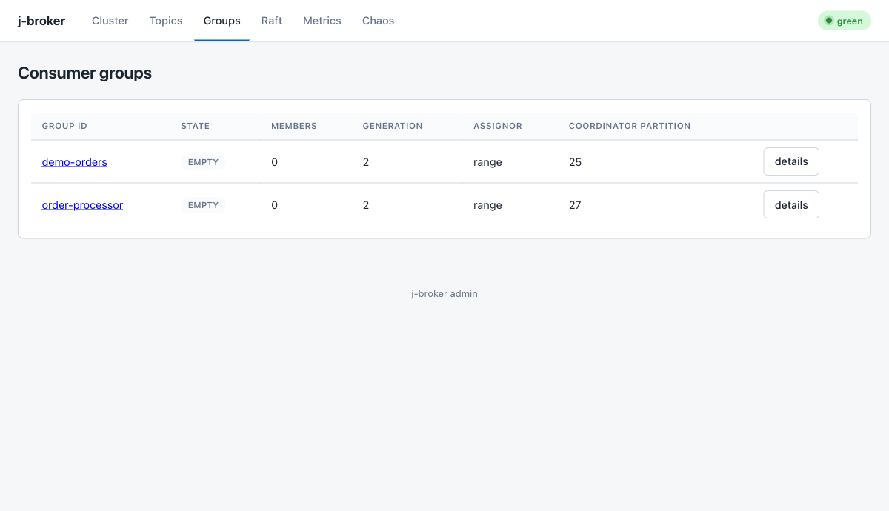

Consumers
Group membership, offsets, isolation levels, and dead-letter routing with a single-threaded poll loop.
Consumer<K, V> (package jbroker.broker.client.consumer) is single-threaded: the application drives the state machine by calling poll repeatedly, and each poll sends one group heartbeat, fires rebalance callbacks when the assignment changed, and fetches from every assigned partition. Dependency setup is covered in Install & deploy.
A minimal group consumer
import java.time.Duration;
import java.util.List;
import jbroker.broker.client.consumer.Consumer;
import jbroker.broker.client.consumer.ConsumerConfig;
import jbroker.broker.client.consumer.RebalanceListener;
import jbroker.broker.client.consumer.StringDeserializer;
var config = ConsumerConfig.builder("workers", "localhost", 9092).build();
try (var consumer = new Consumer<>(config, new StringDeserializer(), new StringDeserializer())) {
consumer.subscribe(List.of("orders"), RebalanceListener.NO_OP);
while (running) {
var records = consumer.poll(Duration.ofMillis(500));
for (var rec : records) {
System.out.println(rec.tp().getTopic() + "-" + rec.tp().getPartition()
+ "@" + rec.offset() + ": " + rec.value());
}
consumer.commitSync(); // persist positions for everything just processed
}
}Every member started with group id "workers" and the same subscription shares the topic's partitions; the coordinator assigns each partition to exactly one member. An empty ConsumerRecords means "nothing this tick" — the group may still be forming — so callers simply loop. close() leaves the group cleanly, triggering an immediate rebalance of its partitions to the survivors.
Two members of one group splitting a two-partition topic: each owns one partition and receives only its records.
The admin UI's Groups page shows the live membership and per-partition lag of every group:

ConsumerConfig
Configuration is an immutable object built with chained setters. ConsumerConfig.builder(groupId, host, port) is the single-endpoint entry point; ConsumerConfig.builder(groupId) is for the cluster-aware path where discovery comes from a ClusterClient and the bootstrap host/port are unused.
| Builder method | Default | Meaning |
|---|---|---|
instanceId(String) | "" (dynamic) | Static membership: a member rejoining with the same instance id preserves its slot and assignment instead of triggering a rebalance. |
sessionTimeoutMs(int) | 45000 | How long the coordinator waits without a heartbeat before evicting the member. |
rebalanceTimeoutMs(int) | 60000 | How long the coordinator waits for members to finish a rebalance stage. |
fetchMaxBytes(int) | 1048576 (1 MiB) | Server-side bound on one fetch response, per partition per poll. |
maxPollRecords(int) | 500 | Upper bound on records one poll returns. Surplus already fetched stays buffered client-side, in order, for the next poll — never dropped. |
pollFetchDeadline(Duration) | 5s | Per-fetch gRPC deadline inside a poll tick (also the per-tick retry budget on the cluster path). |
deadLetterPolicy(DeadLetterPolicy) | null (disabled) | Retry-then-dead-letter routing for handler-driven polls; see Dead-letter routing. |
tls(TlsConfig) | TlsConfig.DISABLED | TLS / mTLS settings; see Security. |
isolationLevel(IsolationLevel) | READ_UNCOMMITTED | What the consumer may see of transactional data; see read_committed. |
Rebalancing
Rebalances are cooperative and incremental: instead of a stop-the-world revoke of every partition, the coordinator moves only the partitions that actually change hands, in stages. The consumer reports its owned_partitions on each heartbeat, the coordinator advances the stages, and the RebalanceListener fires on the actual diffs — onPartitionsRevoked with partitions leaving this member, onPartitionsAssigned with partitions arriving. Members that keep a partition through the rebalance never stop consuming it.
import java.util.Collection;
import jbroker.proto.common.TopicPartition;
consumer.subscribe(List.of("orders"), new RebalanceListener() {
@Override
public void onPartitionsRevoked(Collection<TopicPartition> revoked) {
consumer.commitSync(); // last chance to persist progress for these partitions
}
@Override
public void onPartitionsAssigned(Collection<TopicPartition> added) {
// prime any per-partition state
}
});Commit inside onPartitionsRevoked: after the callback returns, the next heartbeat reports the post-revoke owned set, and the next owner resumes from whatever was last committed. Applications that don't need callbacks pass RebalanceListener.NO_OP. On a newly assigned partition, the consumer primes its position from the group's committed offset (or 0 if never committed).
Manual control
Four levers adjust consumption without touching group membership — heartbeats keep flowing throughout:
seek(topic, partition, offset)repositions the fetch cursor of an assigned partition; already-buffered records from the old position are discarded, never returned.seekToBeginning/seekToEndfirst resolve the log's actual bounds from the broker.pause(topic, partition)stops fetching that partition (buffered records are held back too);resumeundoes it;paused()lists what is held. Pause state survives a seek.maxPollRecordsbounds each poll's hand-back for predictable per-iteration processing time.
// Reprocess partition 0 from a checkpoint while holding partition 1 back.
consumer.pause("orders", 1);
consumer.seek("orders", 0, checkpointOffset);
var replayed = consumer.poll(Duration.ofMillis(500));
consumer.resume("orders", 1);Commits
The consumer tracks a position per assigned partition, advanced only for records a poll has actually returned — buffered-but-unreturned records never advance it. Nothing is committed automatically in the plain poll loop; you choose when:
commitSync()— commit current positions, blocking until the coordinator acks. The workhorse.commitSync(Map<TopicPartition, OffsetAndMetadata>)— commit an explicit offset map (for checkpointing mid-batch).commitAsync()/commitAsync(Map)— the position snapshot is taken immediately (later polls can't leak in), the commit runs on a background thread, and overlapping calls reach the coordinator in submission order. The future completes exceptionally on failure — a failed commit is never swallowed.committed(tp)— look up the group's last committed offset for a partition (offset-1when never committed).
import java.util.Map;
import jbroker.broker.client.consumer.OffsetAndMetadata;
var tp = TopicPartition.newBuilder().setTopic("orders").setPartition(0).build();
consumer.commitSync(Map.of(tp, new OffsetAndMetadata(1234L))); // explicit checkpoint
var async = consumer.commitAsync(); // non-blocking, ordered
OffsetAndMetadata last = consumer.committed(tp); // group's committed viewThe handler-driven poll(Duration, RecordHandler) variant (below) is the exception: it auto-commits the tick's resulting positions with one synchronous commit after all handlers ran.
read_committed isolation
With isolationLevel(READ_COMMITTED), the consumer only sees records whose transaction outcome is decided and committed:
var config = ConsumerConfig.builder("auditors", "localhost", 9092)
.isolationLevel(ConsumerConfig.IsolationLevel.READ_COMMITTED)
.build();Three mechanisms combine:
- Fetch capping. The broker caps
read_committedfetches at the last stable offset, so records of still-open transactions are never shipped. - Aborted filtering. The broker attaches the aborted-transaction ranges overlapping the response; the client drops transactional batches belonging to those producers. A range closes at that producer's ABORT marker, so a later committed transaction from the same producer passes through.
- Control batches skipped. Transaction markers (COMMIT/ABORT control batches) travel inline in the fetched bytes but are never surfaced as application records — under either isolation level.
The default, READ_UNCOMMITTED, returns every produced record, decided or not. Note that filtering can make offsets appear sparse to a read_committed reader — aborted records and markers still occupy offsets.
Dead-letter routing
The handler-driven poll turns "poison message" handling into configuration. Attach a DeadLetterPolicy and process records with a RecordHandler; the handler signals a retriable failure by throwing RetryableException:
import jbroker.broker.client.consumer.DeadLetterPolicy;
import jbroker.broker.client.consumer.RetryableException;
var config = ConsumerConfig.builder("workers", "localhost", 9092)
.deadLetterPolicy(new DeadLetterPolicy("orders-dlt", /*maxAttempts*/ 3, Duration.ofMillis(200)))
.build();
// inside the poll loop:
consumer.poll(Duration.ofMillis(500), rec -> {
if (!process(rec)) {
throw new RetryableException("downstream rejected " + rec.offset());
}
});Semantics, in order:
- The record is retried up to
maxAttemptstimes, sleepingbackoffbetween tries (constant — no jitter, no exponential growth). - On final failure it is produced verbatim to
dltTopic— same partition number as the source — decorated with anX-DLT-Failure-Causeheader carrying the last exception's class and message as UTF-8 bytes. - The consumer's offset advances past the failed record only after the DLT produce confirms, then the tick auto-commits. The partition keeps flowing; the bad record waits in the DLT.
- Any exception other than
RetryableExceptionescaping the handler is treated as fatal and propagates out ofpollwithout DLT routing — if a bug corrupts every record, you don't want 100% of traffic silently re-routed.
Consuming through failover
The cluster-aware constructor routes every consumer call through a shared ClusterClient (which the application owns and may also feed a producer):
import jbroker.broker.client.ClusterClient;
try (var cluster = new ClusterClient(List.of("localhost:9092", "localhost:9093", "localhost:9094"))) {
var config = ConsumerConfig.builder("workers").build(); // no bootstrap host/port needed
try (var consumer = new Consumer<>(config, new StringDeserializer(), new StringDeserializer(), cluster)) {
consumer.subscribe(List.of("orders"), RebalanceListener.NO_OP);
// poll/commit as usual — leader and coordinator failover are absorbed here
}
}What the cluster path absorbs, per the routing layer's contract:
- Per-tick calls (heartbeat, fetch) get a short budget — one
pollFetchDeadline— and map retry exhaustion to an empty result, so a poll during an election window simply comes back empty and the next poll retries. The application never sees the election. - Offset-durability calls (commit, committed-offset and log-bounds lookups) keep retrying up to the client's full call deadline before reporting failure, because a dropped commit is worse than a slow one.
- Coordinator moves (
NOT_COORDINATOR) invalidate the cached coordinator; the next call re-finds it. Incremental fetch sessions are re-established transparently when a fetch lands on a different broker after failover.
The single-endpoint constructor keeps the original behavior: one bootstrap broker plus a cached coordinator channel, with errors surfacing directly — fine for development, not for riding through broker restarts.
Python consumer
The Python reference client's consumer is one group member with the same heartbeat/assignment/fetch/commit cycle — single endpoint, no failover routing. poll() returns a list of ConsumerRecord dataclasses (topic, partition, offset, key, value, headers); an empty list means "nothing this tick", so callers loop:
from jbroker import Consumer
with Consumer("127.0.0.1", 9092, group_id="workers", topics=["orders"]) as consumer:
records = []
while len(records) < 3: # poll() returns [] while the group forms
records.extend(consumer.poll())
for record in records:
print(record.offset, record.value)
consumer.commit() # next member of "workers" resumes hereKeyword options mirror the Java knobs where implemented: instance_id (static membership, default ""), rebalance_timeout_ms (default 30000), fetch_max_bytes (default 1 MiB). commit() commits current positions for every assigned partition and committed(topic, partition) reads the group's committed offset back. See the package README for install and stub generation.
Next
Producing the records this page consumes — batching, idempotence, transactions — is covered in Producers; day-two topics like lag monitoring live in Operations.